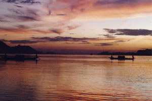
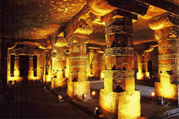
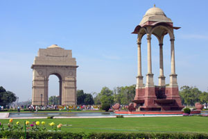
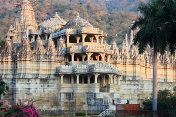

Havelock Island is the largest of its kind in Ritchie’s Archipelago. It makes the perfect location for eco-tourism. Havelock Island now sees more visitors because of its great beaches, snorkeling, scuba diving opportunities and casual atmosphere.
Brahmaputra River

Tourists who are seeking companionship with nature will find Brahmaputra River provides them with a burst of excitement. Brahmaputra is one of the major rivers in northeast India. Its origin can be traced to Tibet.
Ajanta Caves

Ajanta Caves dates back to the second century BC. They became isolated around 1819 which has helped to preserve some of their paintings. The preserved murals have everything from sailing ships to the animal-filled forest and city streets.
New Delhi

First-time travelers to India would likely end up in its capital, New Delhi. The flamboyant lifestyle of this city is likely to derail tourists from sticking to their itinerary.
Taj Mahal
Many of the world’s architectures can be attributed to love and the Taj Mahal is one of them. Mumtaz Mahal’s last request from her husband, Shah Jahan, before she died after the delivery of her 14th child, was to have a mausoleum built in her name.
Ranakpur Temple

India is famous for having an array of temples, but Ranakpur Temple really stands out. Its fame stems from its art and architectural creativity. The origin of Ranakpur can be traced back to the 15th century and it took half a century to erect.